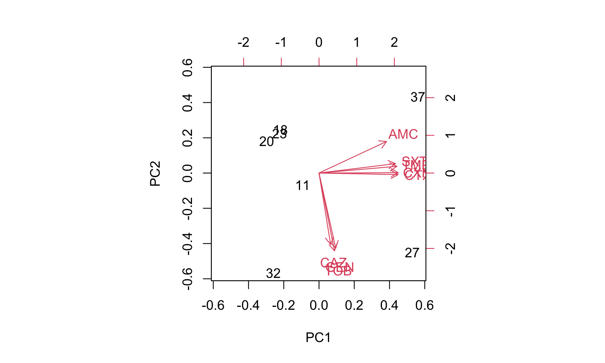
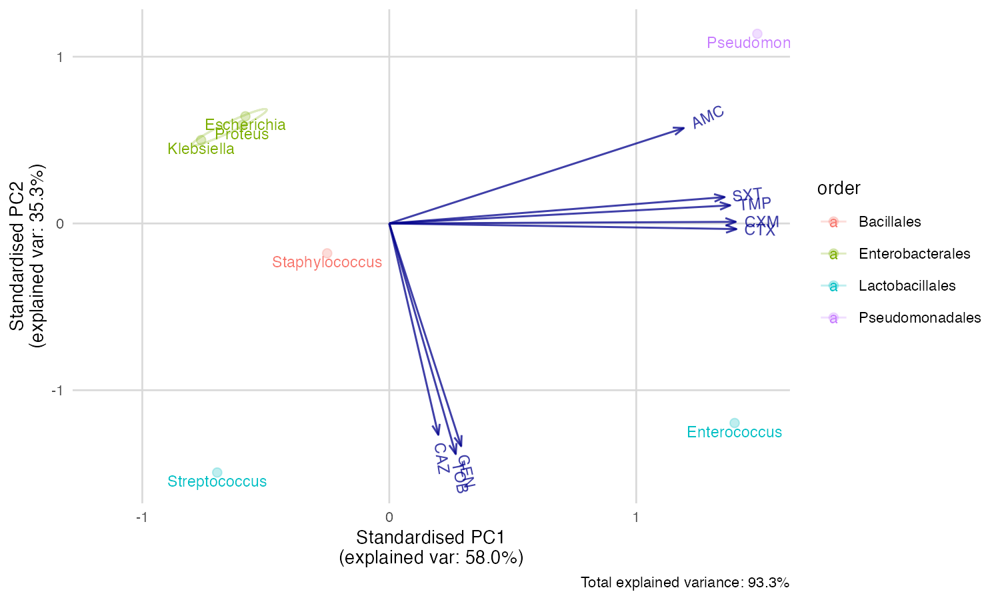
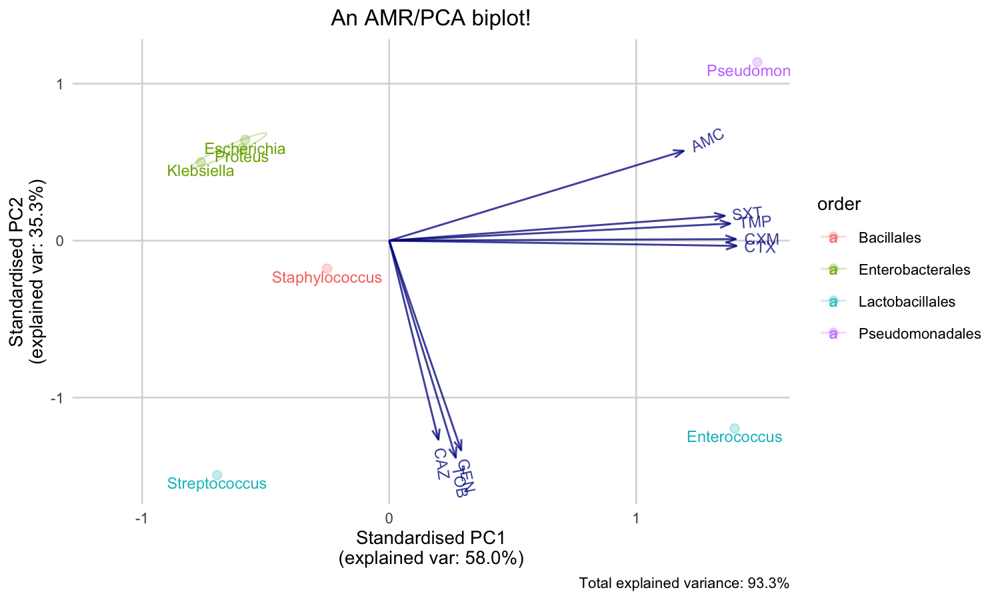

NOTE: This page will be updated soon, as the pca() function is currently being developed.
For PCA, we need to transform our AMR data first. This is what the example_isolates data set in this package looks like:
library(AMR) library(dplyr) glimpse(example_isolates) # Rows: 2,000 # Columns: 49 # $ date <date> 2002-01-02, 2002-01-03, 2002-01-07, 2002-01-07, 2002… # $ hospital_id <fct> D, D, B, B, B, B, D, D, B, B, D, D, D, D, D, B, B, B,… # $ ward_icu <lgl> FALSE, FALSE, TRUE, TRUE, TRUE, TRUE, FALSE, FALSE, T… # $ ward_clinical <lgl> TRUE, TRUE, FALSE, FALSE, FALSE, FALSE, TRUE, TRUE, F… # $ ward_outpatient <lgl> FALSE, FALSE, FALSE, FALSE, FALSE, FALSE, FALSE, FALS… # $ age <dbl> 65, 65, 45, 45, 45, 45, 78, 78, 45, 79, 67, 67, 71, 7… # $ gender <chr> "F", "F", "F", "F", "F", "F", "M", "M", "F", "F", "M"… # $ patient_id <chr> "A77334", "A77334", "067927", "067927", "067927", "06… # $ mo <mo> "B_ESCHR_COLI", "B_ESCHR_COLI", "B_STPHY_EPDR", "B_STP… # $ PEN <rsi> R, R, R, R, R, R, R, R, R, R, R, R, R, R, R, R, R, R,… # $ OXA <rsi> NA, NA, NA, NA, NA, NA, NA, NA, NA, NA, NA, NA, NA, N… # $ FLC <rsi> NA, NA, R, R, R, R, S, S, R, S, S, S, NA, NA, NA, NA,… # $ AMX <rsi> NA, NA, NA, NA, NA, NA, NA, NA, NA, NA, NA, NA, NA, N… # $ AMC <rsi> I, I, NA, NA, NA, NA, S, S, NA, NA, S, S, I, I, R, I,… # $ AMP <rsi> NA, NA, NA, NA, NA, NA, NA, NA, NA, NA, NA, NA, NA, N… # $ TZP <rsi> NA, NA, NA, NA, NA, NA, NA, NA, NA, NA, NA, NA, NA, N… # $ CZO <rsi> NA, NA, NA, NA, NA, NA, NA, NA, NA, NA, NA, NA, NA, N… # $ FEP <rsi> NA, NA, NA, NA, NA, NA, NA, NA, NA, NA, NA, NA, NA, N… # $ CXM <rsi> I, I, R, R, R, R, S, S, R, S, S, S, S, S, NA, S, S, R… # $ FOX <rsi> NA, NA, NA, NA, NA, NA, NA, NA, NA, NA, NA, NA, NA, N… # $ CTX <rsi> NA, NA, NA, NA, NA, NA, NA, NA, NA, NA, NA, NA, S, S,… # $ CAZ <rsi> NA, NA, R, R, R, R, R, R, R, R, R, R, NA, NA, NA, S, … # $ CRO <rsi> NA, NA, NA, NA, NA, NA, NA, NA, NA, NA, NA, NA, S, S,… # $ GEN <rsi> NA, NA, NA, NA, NA, NA, NA, NA, NA, NA, NA, NA, NA, N… # $ TOB <rsi> NA, NA, NA, NA, NA, NA, S, S, NA, NA, NA, NA, S, S, N… # $ AMK <rsi> NA, NA, NA, NA, NA, NA, NA, NA, NA, NA, NA, NA, NA, N… # $ KAN <rsi> NA, NA, NA, NA, NA, NA, NA, NA, NA, NA, NA, NA, NA, N… # $ TMP <rsi> R, R, S, S, R, R, R, R, S, S, NA, NA, S, S, S, S, S, … # $ SXT <rsi> R, R, S, S, NA, NA, NA, NA, S, S, NA, NA, S, S, S, S,… # $ NIT <rsi> NA, NA, NA, NA, NA, NA, NA, NA, NA, NA, NA, NA, NA, N… # $ FOS <rsi> NA, NA, NA, NA, NA, NA, NA, NA, NA, NA, NA, NA, NA, N… # $ LNZ <rsi> R, R, NA, NA, NA, NA, NA, NA, NA, NA, NA, NA, R, R, R… # $ CIP <rsi> NA, NA, NA, NA, NA, NA, NA, NA, S, S, NA, NA, NA, NA,… # $ MFX <rsi> NA, NA, NA, NA, NA, NA, NA, NA, NA, NA, NA, NA, NA, N… # $ VAN <rsi> R, R, S, S, S, S, S, S, S, S, NA, NA, R, R, R, R, R, … # $ TEC <rsi> R, R, NA, NA, NA, NA, NA, NA, NA, NA, NA, NA, R, R, R… # $ TCY <rsi> R, R, S, S, S, S, S, S, S, I, S, S, NA, NA, I, R, R, … # $ TGC <rsi> NA, NA, NA, NA, NA, NA, NA, NA, NA, NA, NA, NA, NA, N… # $ DOX <rsi> NA, NA, S, S, S, S, S, S, S, NA, S, S, NA, NA, NA, R,… # $ ERY <rsi> R, R, R, R, R, R, S, S, R, S, S, S, R, R, R, R, R, R,… # $ CLI <rsi> NA, NA, NA, NA, NA, R, NA, NA, NA, NA, NA, NA, NA, NA… # $ AZM <rsi> R, R, R, R, R, R, S, S, R, S, S, S, R, R, R, R, R, R,… # $ IPM <rsi> NA, NA, NA, NA, NA, NA, NA, NA, NA, NA, NA, NA, S, S,… # $ MEM <rsi> NA, NA, NA, NA, NA, NA, NA, NA, NA, NA, NA, NA, NA, N… # $ MTR <rsi> NA, NA, NA, NA, NA, NA, NA, NA, NA, NA, NA, NA, NA, N… # $ CHL <rsi> NA, NA, NA, NA, NA, NA, NA, NA, NA, NA, NA, NA, NA, N… # $ COL <rsi> NA, NA, R, R, R, R, R, R, R, R, R, R, NA, NA, NA, R, … # $ MUP <rsi> NA, NA, NA, NA, NA, NA, NA, NA, NA, NA, NA, NA, NA, N… # $ RIF <rsi> R, R, NA, NA, NA, NA, NA, NA, NA, NA, NA, NA, R, R, R…
Now to transform this to a data set with only resistance percentages per taxonomic order and genus:
resistance_data <- example_isolates %>% group_by(order = mo_order(mo), # group on anything, like order genus = mo_genus(mo)) %>% # and genus as we do here summarise_if(is.rsi, resistance) %>% # then get resistance of all drugs select(order, genus, AMC, CXM, CTX, CAZ, GEN, TOB, TMP, SXT) # and select only relevant columns head(resistance_data) # # A tibble: 6 x 10 # # Groups: order [2] # order genus AMC CXM CTX CAZ GEN TOB TMP SXT # <chr> <chr> <dbl> <dbl> <dbl> <dbl> <dbl> <dbl> <dbl> <dbl> # 1 (unknown order) (unknown genu… NA NA NA NA NA NA NA NA # 2 Actinomycetales Corynebacteri… NA NA NA NA NA NA NA NA # 3 Actinomycetales Cutibacterium NA NA NA NA NA NA NA NA # 4 Actinomycetales Dermabacter NA NA NA NA NA NA NA NA # 5 Actinomycetales Micrococcus NA NA NA NA NA NA NA NA # 6 Actinomycetales Rothia NA NA NA NA NA NA NA NA
The new pca() function will automatically filter on rows that contain numeric values in all selected variables, so we now only need to do:
pca_result <- pca(resistance_data) # NOTE: Columns selected for PCA: AMC CXM CTX CAZ GEN TOB TMP SXT. # Total observations available: 7.
The result can be reviewed with the good old summary() function:
summary(pca_result) # Importance of components: # PC1 PC2 PC3 PC4 PC5 PC6 PC7 # Standard deviation 2.154 1.6809 0.61305 0.33882 0.20755 0.03137 1.602e-16 # Proportion of Variance 0.580 0.3532 0.04698 0.01435 0.00538 0.00012 0.000e+00 # Cumulative Proportion 0.580 0.9332 0.98014 0.99449 0.99988 1.00000 1.000e+00
Good news. The first two components explain a total of 93.3% of the variance (see the PC1 and PC2 values of the Proportion of Variance. We can create a so-called biplot with the base R biplot() function, to see which antimicrobial resistance per drug explain the difference per microorganism.
biplot(pca_result)

But we can’t see the explanation of the points. Perhaps this works better with our new ggplot_pca() function, that automatically adds the right labels and even groups:
ggplot_pca(pca_result)

You can also print an ellipse per group, and edit the appearance:
ggplot_pca(pca_result, ellipse = TRUE) + ggplot2::labs(title = "An AMR/PCA biplot!")
